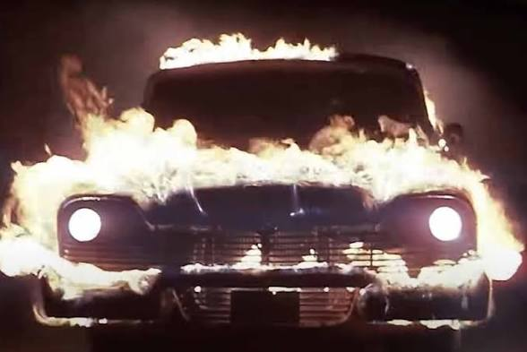

👻 🔥 🔪 CHRISTINE (1983) — CERTIFIED MGC XF-46

🏛 MGC LOWER COURT OF APPEALS
- ASSET TITLE: 👻 🔥 🔪 CHRISTINE (1983) – The Autumn-Red 1958 Plymouth Fury Restoration Strike
- BASELINE BENCH ASSESSMENT: Room Allocation ➔ MGC XF-45 (Choice Extremely Fine / Supernatural Muscle-Car Workhorse)
- PRESIDING DOCKET: MGC Judge Bob & Chief Justice MGC
- CASE FILE: #080
📜 THE INITIAL INQUEST & FORENSIC LOG (3-FLAW DEFECT LOG)
Under a cold, disciplined 5x lens review, John Carpenter’s 1983 adaptation packs unmistakable mechanical and atmospheric striking power—Keith Gordon’s remarkable transformation from bullied high-school nerd into cold-eyed 1950s greaser, practical hydraulic reverse-crushing effects that still hold up over forty years later, a killer rock-and-roll needle-drop soundtrack, and Dean Cundey’s crisp Panavision widescreen photography. However, three localized structural defects hold the planchet at XF-45 rather than pushing into the XF-49 ceiling or About Uncirculated (AU-50):
🚨 Key Planchet Flaws:
1. The Missing Origin Logic Scuff
- Unlike Stephen King’s novel—where the car is explicitly possessed by the murderous spirit of its previous owner, Roland LeBay—Carpenter’s film leaves Christine’s supernatural evil completely unexplained from the Detroit assembly line onward, creating a noticeable narrative gap regarding why the Fury kills.
2. The Sidelined Detective & Supporting Character Friction
- Harry Dean Stanton’s Detective Junkins enters the second act with promising investigative tension, only to vanish completely from the third-act climax, leaving Dennis and Leigh to resolve the threat without any payoff to the police subplot.
3. The Predictable Bulldozer-Crush Climax Loop
- After building sinister psychological dread around Arnie’s corruption, the final act pivots into a standard 1980s slasher-style showdown inside Darnell’s garage—resolving the supernatural menace via a predictable heavy-machinery smash-up and a telegraphed final grille-twitch tease.
⚖ THE APPELLATE REVIEW & FINAL DECREE
Motion 3 (The Bulldozer-Crush Climax): OVERRULED.
- The Chief Justice struck down the predictability objection, ruling that the entire film operates on erratic, unpredictable supernatural logic where nobody knows what Christine will do next. Furthermore, the heavy-machinery crushing and practical hydraulic self-repair effects inside Darnell’s garage represent top-notch 1983 SFX craftsmanship that earn every bit of their climax velocity.
🔍 THE FINAL DECREE & CERTIFIED JUDGMENT
- The Final Executive Verdict: With Flaws 1 and 2 sustained on the record and Motion 3 forcefully overruled on practical SFX merit and unpredictable tension, the planchet secures its MGC XF-46 (Choice Extremely Fine Supernatural Workhorse) certification.
- MGC Judge Bob slams his wooden gavel down with a thunderous pop. Case Closed! 👻🔥🔪

• © 2026 MOVIE GRADING CONSENSUS. All Sovereign Rights Reserved.